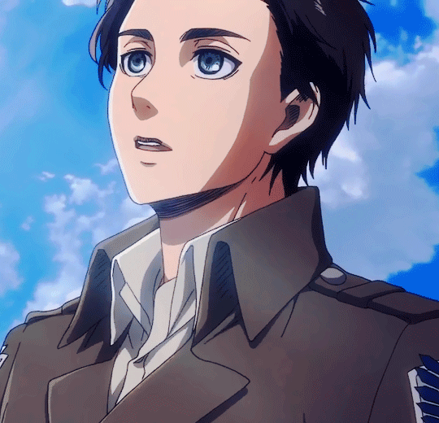
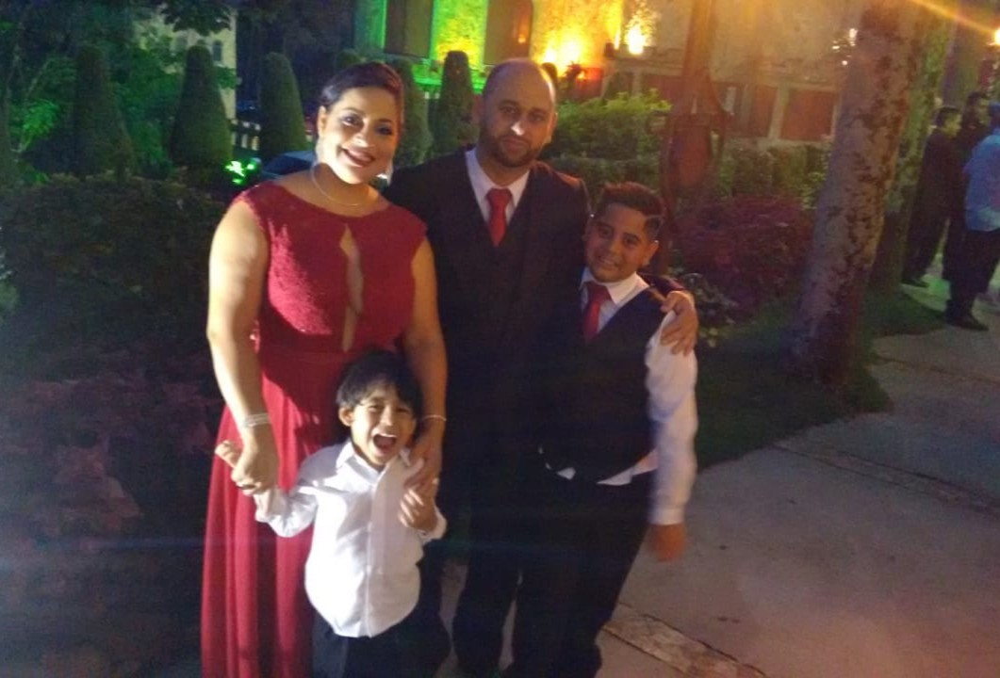
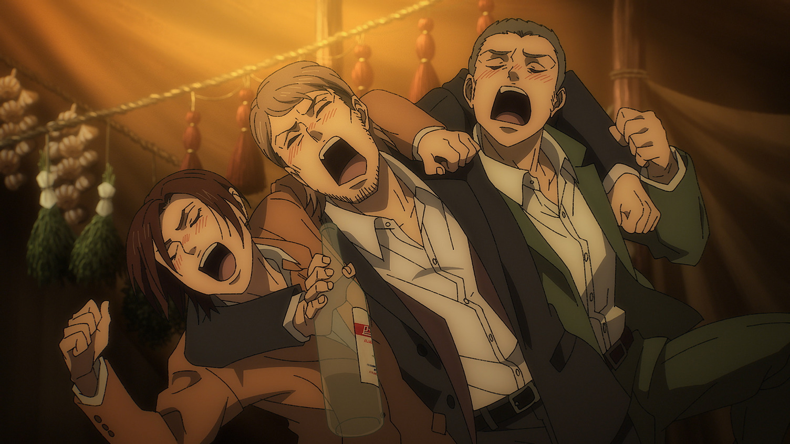
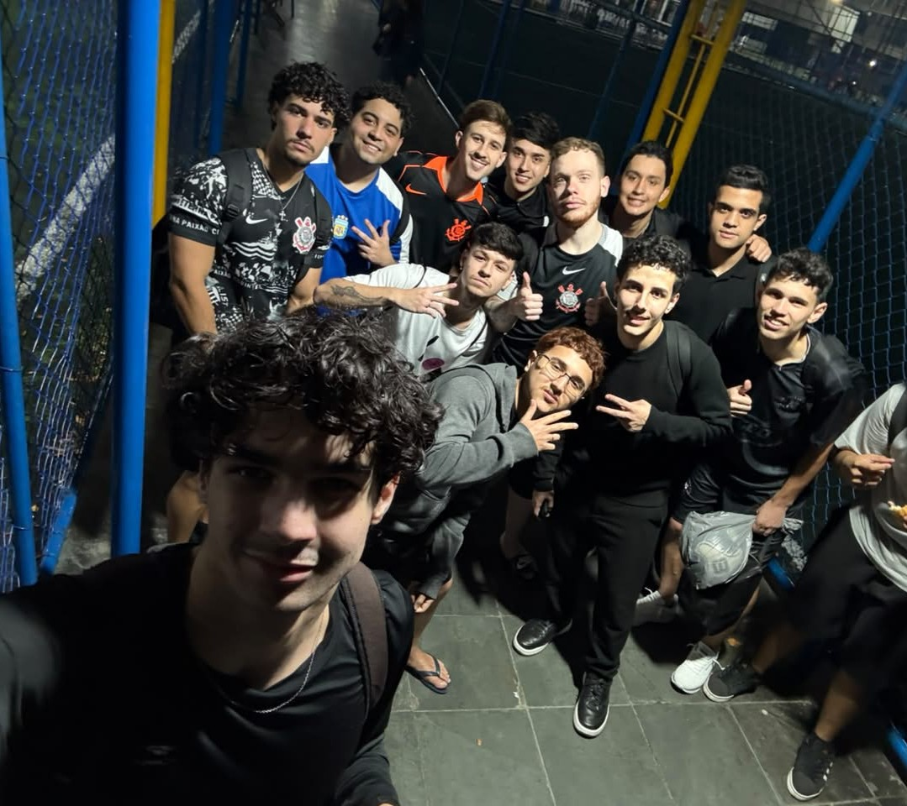
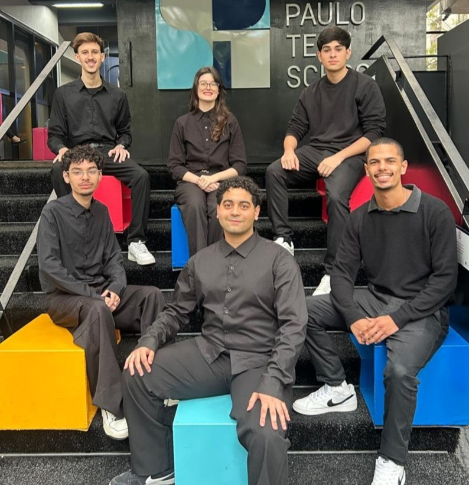
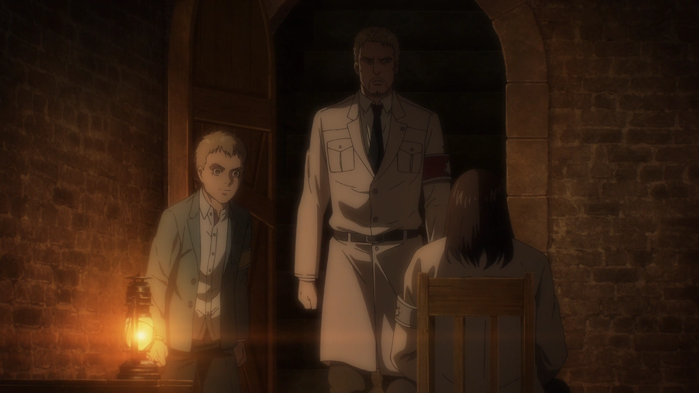

Liberdade
Para mim, liberdade não significa simplesmente poder fazer tudo o que queremos. Também representa a possibilidade de escolher nosso próprio caminho, descobrir quem queremos ser e buscar nossos objetivos.

Conexões
As pessoas que encontramos e as relações que construímos fazem parte da nossa história. Ninguém cresce completamente sozinho, e as experiências compartilhadas também ajudam a construir quem somos.




Persistencia
Nem sempre o caminho até um objetivo é simples. Existem dificuldades, erros e momentos em que precisamos aprender novamente. Para mim, continuar evoluindo mesmo diante das dificuldades é algo muito importante.

Diferentes perspectivas
Uma das coisas que mais me marcou na obra foi perceber que as situações nem sempre possuem apenas um lado. Pessoas diferentes podem enxergar o mesmo acontecimento de maneiras completamente diferentes.